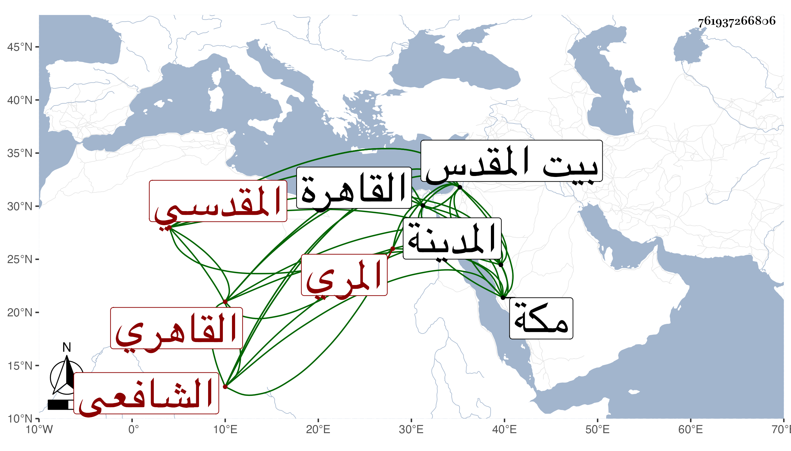

0902Sakhawi.DawLamic.ITO20230111-ara1.EIS1600.761937266806
Biography ID: 761937266806
إبراهيم بن محمد بن أبي بكر بن علي بن مسعود بن رضوان برهان الدين المري بالمهملة المقدسي ثم القاهري الشافعي أخو الكمال محمد ويعرف كل منهما بابن أبي شريف . ولد في ليلة الثلاثاء ثامن عشر ذي القعدة سنة ست وثلاثين وثمانمائة ببيت المقدس ونشأ بها فحفظ القرآن وهو ابن سبع وتلاه تجويدا بل ولابن كثير وأبي عمرو على الشمس بن عمران ولازم سراجا الرومي في العربية والأصول والمنطق ويعقوب الرومي في العربية والمعاني والبيان بل سمع عليهما كثيرا من فقه الحنفية وسمع على التقي القلقشندي المقدسي والزين ماهر وآخرين وأجاز له باستدعاء أخيه شيخنا وخلق وقدم القاهرة غير مرة فقرأ على الأمين الأقصرائي شرح العقائد للتفتازاني وعلي الجلال المحلى نحو النصف من شرحه لجمع الجوامع في الأصول مع سماع باقيه وتفقه به وبالعلم البلقيني وغيرهما وأخذ الفرائض والحساب عن البوتيجي والشهاب الأبشيطي ومما قرأه عليه الألغاز في الفرائض نظمه والتفسير عن ابن الديري وكذا أخذ عن أبي الفضل المغربي وانتفع في هذه العلوم وغيرها بأخيه بل جل انتفاعه به وبحث عليه في مصطلح الحديث وحج معه صحبة أبيهما في ركب الرجبية سنة ثلاث وخمسين فحج وسمع بمكة والمدينة على جماعة كالتقي بن فهد وأبي الفتح المراغي وأبي البقاء بن الضياء وأبي السعادات والمحب المطري وبرع في فنون وأذن له غير واحد بالإقراء والإفتاء وعمل شرحا للحاوي مزجا في مجلد أو اثنين ولقواعد الإعراب لابن هشام في نحو عشرة كراريس دمج فيه المتن وللعقائد لابن دقيق العيد وسماه عنوان العطاء والفتح في شرح عقيدة ابن دقيق العيد أبي الفتح بل نظم العقيدة المشروحة وللنفحة القدسية في الفرائض نظم ابن الهائم سماه المواهب القدسية ولقطعة من البهجة الوردية ومن المنهاج الفرعي وله منظومة في رواية أبي عمرو نحو خمسمائة بيت بل نظم النخبة لشيخنا في نيف ومئة بيت وهي والتي قبلها على روى الشاطبية وبحرها وقرضها له جماعة من المصريين وغيرهم نظما ونثرا ونظم لقطة العجلان للزركشي والجمل في المنطق ومنطق التهذيب للتفتازاني والورقات لإمام الحرمين وشذور الذهب وكذا نظم عقائد النسفي وسماه الفرائد في نظم العقائد بل له حواش على شرح العقائد للتفتازاني وتفسير سورة الكوثر وسورة الإخلاص والكلام على البسملة وعلى خواتيم سورة البقرة وعلى قوله تعالى إن ربكم الله في سورة الأعراف إلى إن رحمة الله قريب من المحسنين وشرع في نظم جامع المختصرات في الفقه وكذا في مختصر في الفقه حذا فيه حذو مجمع البحرين في تضمين خلاف المذاهب ما عدا أحمد واختصر الرسالة القشيرية وسماه منحة الواهب النعم والقاسم في تلخيص رسالة الأستاذ القشيري أبي القاسم . وقطن القاهرة واختص فيها بالشرف المناوي وحضر دروسه بل صاهره على ابنته التي كانت زوجة لابن الطرابلسي وأخذ عنه الطلبة في جامع الأزهر وغيره وقسم وأقرأ فنونا وربما أفتى واستقر في تدريس التفسير بجامع طولون وفي الفقه والميعاد والخطابة ثلاثتها بالحجازية وفي الفقه والنظر بجامع الفكاهين وفي غير ذلك وناب في الفقه بالمزهرية وبالمؤيدية وتعاني التجارة وعرف بالملاءة مع الفضل والبراعة والعقل والسكون . وممن كتب عنه البقاعي وقال أنه في العشرين من عمره صار من نوادر الزمان وكذا كتبت عنه أبياتا في موانع النكاح وقصيدة في ختم البخاري من أبياتها :
| دموعي قد نمت بسر غرامي | وباح بوجدي للوشاة سقامي |
| فأضحى حديثي بالصبابة مسندا | ومرسل دمعي من جفوني دامي |
وكتب إلى أخيه متشوقا :
| ما خلت برقا بأرجاء الشآم بدا | إلا تنفست من أشواقي الصعدا |
| ولا شممت عبيرا من نسيمكم | إلا قضيت بأن أقضي به كمدا |
| ولا جرى ذكركم إلا جرت سحب | أوردت لظى بفؤاد أورثته ردى |
| يا لوعة البين ما أبقيت من جلد | أيقنت والله أن الصبر قد نفدا |
| حشوت أحشاي نيرانا قد اتقدت | بأضلعي فأذابت مني الجسدا |
| كيف السبيل إلى عود اللقاء وهل | هذا البعاد قضى المولى له أمدا |
| من يبلغ الصحب أن الصب قد بلغت | أشواقه حالة ما مثلها عهدا |
| لم أنس أنس ليال بالهنا وصلت | والنفس بالوصل أمسى عيشها رغدا |
| أحادي العيس إن حاذيت حيهم | فحيهم وصف الوجد الذي وجدا |
| وأشهد بما شهدت عيناك من حرق | يهدا السقام وما منها الفؤاد هدا |
| وإن حللت ربي تلك الرباع فسل | عن جيرة لهم روح المشوق فدا |
| فالروح ما برحت بالقدس مسكنها | والجسم في مصر للتبريح قد قعدا |
| هي البقاع التي شد الرحال لها | على لسان رسول الله قد وردا |
| من حل أرجاءها ترجى النجاة له | أكرم بها معبدا أعظم بها بلدا |
| صوب العهاد على تلك المعاهد لا | زالت سحائبه منهلة أبدا |
وهو في كدر بسبب ولد له .
